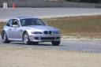
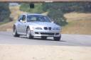
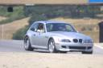
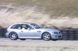
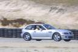

Projects & Maintenance
|
For write-ups of my mods and maintenance click here.
|
Track Events
|
These are a sampling of the track events I've been to. (I don't always have time to get video or photos uploaded.)
- Track Weekend with TracQuest at Laguna Seca, November 2002.
TracQuest is a top notch group
that organizes track outings. I've done several track weekends with
the local BMWCCA, which are ideally suited for beginners wanted to learn
the ropes in a very controlled environment. TracQuest is a nice step
up from that, in so far as the environment is a little more accepting
of different lines and experimentation. I learned how to double apex
turn 2, which is a total blast in the M Coupe.
Here is some track video of me driving at Laguna Seca.
- 3 Day Skip Barber Racing School
On Feb 21-23, 2003 I attended a Skip Barber Racing School. The pictures can
be seen here.
- Track Weekend with The BMWCCA San Diego chapter at Buttonwillow, April 2003.
Here is some track video of me driving at Buttonwillow Raceway.
- Track Weekend with TracQuest at ThunderHill, July 2003.
Here are some pictures of me driving at ThunderHill.
The temperatures were "mild" for the Central Valley in July. The temperatures were in the high 90s both days. The previous weekend
the high was 105. I was glad I had the brake ducts installed. I experience no fade from the brakes, although I managed to get the rear
brakes hot enough to get a bit of pad transfer. Maybe I need to ventilate the rears now too. Either that or stick to cooler weather. :)
|
Track Pictures
|
|
Pictures of me driving at Laguna Seca with the local BMWCCA, courtesy of Dane Collins.





|
My Favorite M Coupe and Driving Links
|
|
|
Last modified: Sun Feb 8 15:36:23 PST 2004
by: Bryn Dole, ( bryn @ dole . nu )
|
|
 BMW M Coupe Info
BMW M Coupe Info{kind=link}
{kind=link}
{kind=link}
{kind=link}
{kind=link}